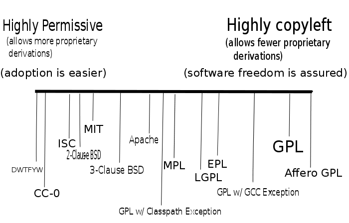

Introduction to Linux's License
Bradley M. Kuhn
LCA 2020
Tuesday 14 January 2020
Why Should You Care?
Engineers and developers like to do cool things with computing.
It's totally reasonable that you might feel licensing just gets in your way … and you're probably right.
My goal is to give you enough information so that licensing doesn't get in your way…
… and maybe you'll be able to teach others too.
You Can Learn this license stuff.
Every great wizard in history has started out as nothing more than what we are now, students. If they can do it, why not us?
— J. K. Rowling & Michael Goldenberg
Harry
Potter and the Order of the Phoenix
Things Even Non-Lawyers Should Know
I am not a lawyer either.
I can't give you legal advice, but …
This talk can help you ask much more intelligent questions of lawyers when you have a question about your engineering and development work.
So, let's focus on Software
Let's consider what it means to get a software license.
A license, in non-lawyer terms, is a bundle of permissions wrapped with a bundle of requirements.
Proprietary licenses rely primarily on contract law as the foundation of their licenses.
FOSS licenses rely primarily on copyright law as the foundation of their licenses.
(but both draw from other legal regimes as well)
What Is Software?
Software is a series of textual statements.
Text, in our legal system, is governed by copyright.
The primary system that governs software is therefore copyright.
What Does Copyright Govern?
Copyright was invented primarily for books.
It governs permission to copy, distribute, and modify a “work”.
Engaging in those activities is otherwise prohibited.
Does/Should a License Do More?
Ultimately depends on the authors' goal.
Every FOSS license gives those basic rights and permissions.
Some licenses “do more”.
What is Copyleft?
Copyleft utilizes copyright to achieve a policy system that assures software freedom.
First: asserts your rights to copy, modify and distribute the software.
Second: adds conditional requirements on those activities, when such requirements help assure the software freedom of others.
Copyleft Is a Tool, Not a Principle
— Definition of copyleft from
copyleft.org Copyleft is a strategy of
utilizing copyright law to pursue the policy goal of fostering &
encouraging the equal & inalienable right to copy, share, modify &
improve creative works of authorship. Copyleft … describes any method
that utilizes the copyright system to achieve the aforementioned
goal. Copyleft as a concept is usually implemented in the details of a
specific copyright license … Copyright holders of creative work can
unilaterally implement these licenses for their own works to build
communities that collaboratively share & improve those copylefted
creative works.
Details of the GPL
The General Public License (GPL) is a specific implementation of copyleft.
Copyleft can apply to any copyrightable work, but GPL focuses on copyleft for software.
GPL has detailed rules to assure downstream users & developers benefit from the software freedoms assured by copyleft in any effective way.
The Mindset of GPL
Ultimate goal: make sure every user has the four software freedoms:
- to run the software.
- to study and modify the software.
- Freedom to share the software.
- Freedom to distribute modified versions.
Using Copyright
GPL is primarily a copyright license.
- software is copyrighted.
- License grants key freedoms.
- Requirements prohibit activities that take away freedoms.
- You may do A, “provided that” you do B
“Strong” Copyleft
License like the General Public License (GPL) are known as strong copyleft.
A strong copyleft license typically seeks to extend its scope of coverage to the breadth of derivative and/or combined works that the copyright statue allows.
“Weak” Copyleft
By contrast, a weak copyleft license unilaterally provides some detailed rules that permit creation and/or distribution of certain types of proprietary combinations and/or derivations that would require a copyright holder's permissions and that a strong copyleft license would forbid.
Modification As a Center Provision
GPL's primary copyright hook is copyright controls on the right to modify.
GPL's central tenant:
- You can make a modified version of various types privately as much as you'd like.
- When you distribute that modified version, you have requirements to meet.
[GPLv2§]2
[GPLv2§]2. You may modify your copy or copies of the Program or any
portion of it, thus forming a work based on the Program, and copy and
distribute such modifications or work under the terms of Section 1 above,
provided that you also meet all of these conditions:
a) You must cause the modified files to carry prominent notices stating
that you changed the files and the date of any change.
b) You must cause any work that you distribute or publish, that in
whole or in part contains or is derived from the Program or any
part thereof, to be licensed as a whole at no charge to all third
parties under the terms of this License.
Derivative Works
Everyone wants a good risk analysis, but: why would they want to test the boundary?
You should certainly read the section in the Copyleft Guide.
Rarely does the derivative work question actually come up.
Removing the copylefted software is always an option.
Source Code Matters
The freedom to modify is essential; source code is mandatory for modifications.
Many provisions in GPL focus on details of source code disclosure.
Binaries (Object Code) are Modifications
Software that the computer understands is different than software humans read.
There is often a process required to modify (and/or translate) the software from human-readable to computer-readable.
A Legal Mechanism for Technical Details
While hearing it's a copyright license might indicate the lawyer is the most important expert to understand the license…
…in fact, most of the confusion around copyleft are more technology-focused than legally-focused.
Indeed, the most important requirement is complete, corresponding source (CCS).
Copyleft at its Core
At its core, copyleft's primary goal is to give downstream users the means and capacity to generate and utilize binaries in the same manner that upstream did.
How GPLv2 Says CCS
You may copy and distribute the Program (or a work based on it, under § 2) in object code or executable form under the terms of § 1 & 2 above provided that you … [a]ccompany it with the complete corresponding machine-readable source code … The source code for a work means the preferred form of the work for making modifications to it. For an executable work, complete source code means all the source code for all modules it contains, plus any associated interface definition files, plus the scripts used to control compilation and installation of the executable.
— GPLv2§3
Testing CCS
Evaluating CCS is often a “know it when I see it” standard. (i.e., can you take the CCS build it, and install it?)
Best Way to Test CCS?
Find an embedded engineer who didn't work on the product and ask that engineer to build from sources a new firmware and install it on the device.
Why So Much Copyleft?
I admit, copyleft is my favorite form of licensing.
The classic joke is that “the ISC license is simple because it doesn't actually do anything”.
But let's briefly take a comparative look at FOSS licensing…
Comparing Licenses
Additional Permissions
Licenses are, in fact, hackable just like software.
Take a “strong” license and make it slightly (or a lot!) “weaker” by adding an additional permission.
These are also often called exceptions…
(… but I find the latter term confusing given the overload of the term exception in programming.)
Linux's License
(Thanks for your patience, I realize it took me this much time to mention Linux at all.)
Linux is a complex project technically, so it's not surprisingly it complex license-wise too.
I recommend this simple mantra:
“the effective license of Linux as a whole is GPLv2-only, but many additional permissions exist on much of its code.”
What's GPLv2-only?
GPL is one of very few FOSS licenses that don't have an “auto-upgrade” clause.
Auto-upgrade means the license steward controls forward-licensing of the code under yet unpublished versions.
What's a License Steward?
A license steward is someone who publishes the text of a FOSS license that is reusable for other copyright holders.
Between FOSS licenses and the ability to write additional permissions, you often have the tools you need to craft interesting licensing solutions; usually, no fresh license drafting is needed.
What's GPLv2-only?
GPL is one of very few FOSS licenses that don't have an “auto-upgrade” clause.
What's Auto-upgrade?
Auto-upgrade means the license steward controls forward-licensing of the code under yet unpublished drafts of the license.
Using Eclipse Public License, Apache Public License (and almost all of the popular non-GNU licenses) means you give those organization (Eclipse Foundation, Apache Software Foundation, etc.) the right to relicense your code any way they wish.
What's Auto-upgrade?
Auto-upgrade also means: when the license steward publishes a new version of the license, that action automatically changes the license on millions of third-party lines of code overnight.
Why Auto-upgrade?
I'm not a fan of a forced auto-upgrade; I prefer the GPL model, even though it's more complicated.
The key feature of auto-upgrade clauses is simplicity.
Don't believe the hype: Linux's license, my friends, is not simple.
Down Linux's Licensing Rabbit-Hole
Opinions of Linux developers differ widely about GPLv3.
Many Linux developers license their code GPLv2-only (forbid upgrade), rather than GPLv2-or-later (opt-in auto-upgrade) because they dislike GPLv3.
Linux has lots of GPLv2-only and GPLv2-or-later code mixed together.
You can “downgrade” the effective license back to GPLv2-only.
Linux syscall Exception
NOTE! This copyright [sic] does not cover user programs that use kernel services by normal system calls - this is merely considered normal use of the kernel, and does *not* fall under the heading of "derived work".
What's a syscall?
Let's consider what this means.
It's an interesting licensing analysis — because technical folks are actually better equipped to think about this than lawyers.
What would someone reasonable skilled in the art consider a “normal system call”?
Linux API to userspace
syscalls are the method that non-kernel-space programs ask the kernel for the resources that it manages.
(e.g., memory, file system, peripherals, etc.)
The Linux syscall exception tell us, “when you do this in the normal way with the normal mechanism, we don't mean for your program to be licensed GPLv2”.
Our Community Made This Up
The emperor's have no clothes!
Copyright wasn't designed for copyleft; copyleft is a hack on copyright.
Courts have hitherto never really considered these questions.
Experts in the field have real power to sway interpretation.
If I were an Expert Witness
Even though I know that Linus probably had in mind a specific (and very short!) list of syscalls when he wrote that exception…
I would consider (for example) using the /sys interfaces to manipulate GPIO as a form of normal syscall, precisely because Linux docs specifically document that as a normal way to interact with the feature
(while they say it's deprecated, says that the SYSFS ABI WILL NOT BE DEVELOPED (NO NEW FEATURES), IT WILL JUST BE MAINTAINED).
Layering with Weak Copyleft
Consider libgpiod.
It provides an additional layer of API for GPIO.
Upon a quick analysis, I believe it likely uses only “normal system calls”, so the syscall exception applies to libgpiod itself.
libgpiod then introduces new copyrights under the Lesser public license.
Libgpiod?
The derivative work analysis here is surely complex (and I've not yet done it).
But an outcome that said “using libgpiod in the usual way requires GPLv2-only to cover the original work” would flabbergast me.
The Dual License with BSD
I'm still a bit baffled why this tradition started.
Ostensibly it was for code sharing with the *BSD projects.
I frankly think it's being exploited by companies who either:
- do not want to grant outbound GPLv2 licenses.
- think this magically gets them around copyleft (it doesn't: remember, effective license of the work is GPLv2!)
Proprietary Kernel Modules
Simply put: I have yet to see a proprietary kernel module that did not create a derivative and/or combined work with Linux, in my (non-lawyer but) expert opinion.
There have been companies getting away with violating copyright licenses for many years and the resources available to stop them are limited.
This is why Conservancy continues to enforce the GPL for Linux.
The Glib Answer To All Licensing Questions
I've began to hint at how complex licensing analysis is.
The complexity only impacts you when you wish to keep something proprietary.
I have yet to see a licensing problem that isn't trivially solved with “release everything under your favorite GPL-compatible license”
More Info / Talk License

URLs / Social Networking / Email:
- I am not a lawyer and this talk was not legal advice. Conservancy is not a law firm and does not provide legal advice.
- Pls. support Conservancy
- You can join the GPL enforcement coalition of Linux developers.
- Conservancy: sfconservancy.org & @conservancy.
Presentation and slides are: Copyright © 2017, 2018, 2019, 2020 Bradley M. Kuhn, and are licensed under the Creative Commons Attribution-Share Alike 4.0 International License. Slide Source available.
Some images included herein are ©’ed by others. I believe my use of those images is fair use under USA © law. However, I suggest you remove such images if you redistribute these slides under CC-By-SA 4.0.
The Whole SPDX thing
You've probably seen Linux Foundation aggressively pushing SPDX identifiers into single files.
The compliance industrial complex has an obsession with precise file-level licensing information, even if it's not entirely accurate.
The Whole SPDX thing
Just keep in mind, copyright statutes around the world talk about “works”, not “files”. The obsession with getting things right in each file is just misguided.
Worst of all, SPDX refuses to list all the additional permissions for GPLv3 that are used in Linux (for political reasons?), so the SPDX information can never possible be correct in Linux, by design.
KESAP
Additional permission added by many Linux copyright holders to their code.
It reads [we] adopt the following provisions of
GPL-3.0 as additional permissions under our license
SPDX decided that this is not an additional permission (!)
I assure you, it turns out if you say that you grant an “additional permission”, you are, in fact, granting an additional permission.
Welcome to post-fact politics!